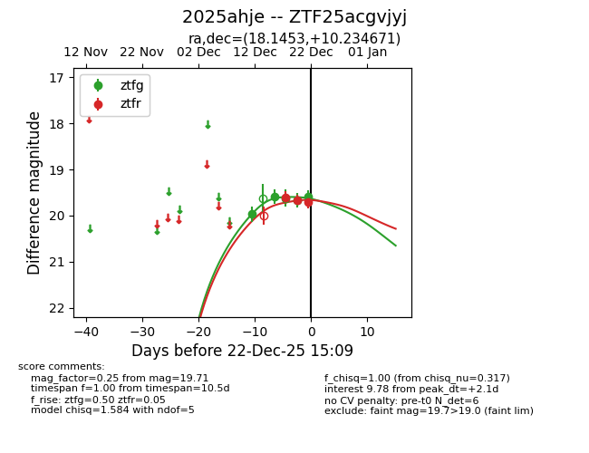
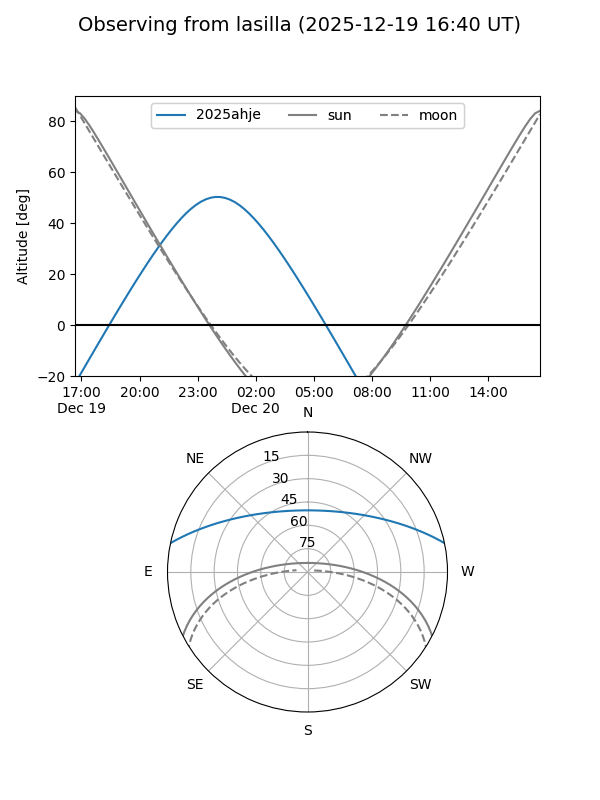
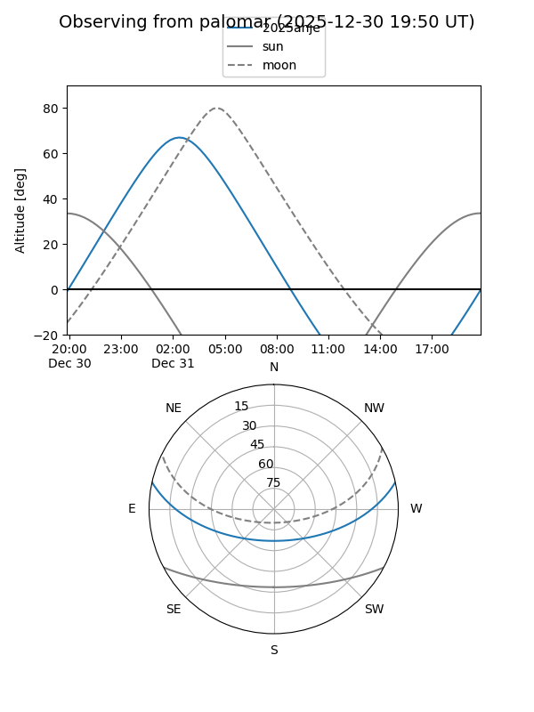
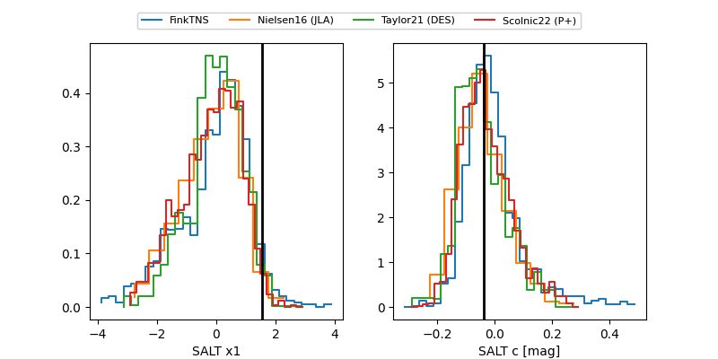

2025ahje
Target 2025ahje at 2025-12-20 03:24
Aliases and brokers:
FINK: fink-portal.org/ZTF25acgvjyj
Lasair: lasair-ztf.lsst.ac.uk/objects/ZTF25acgvjyj
ALeRCE: alerce.online/object/ZTF25acgvjyj
TNS: wis-tns.org/object/2025ahje
YSE: ziggy.ucolick.org/yse/transient_detail/2025ahje
alt names
ZTF25acgvjyj (ztf,fink_ztf)
2025ahje (tns,yse)
Coordinates:
equatorial (ra, dec) = 18.1453,+10.23467
equatorial (HMS+DMS) = 01:12:34.87,+10:14:04.81
galactic (l, b) = (131.4548,-52.28684)
Flags:
Photometry:
last ztfg=19.67, ztfr=19.60
4 ztfg, 1 ztfr detections
Lightcurve

Visibility


Additional plots
